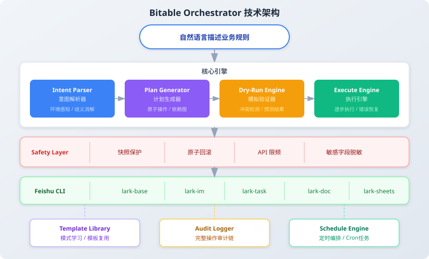
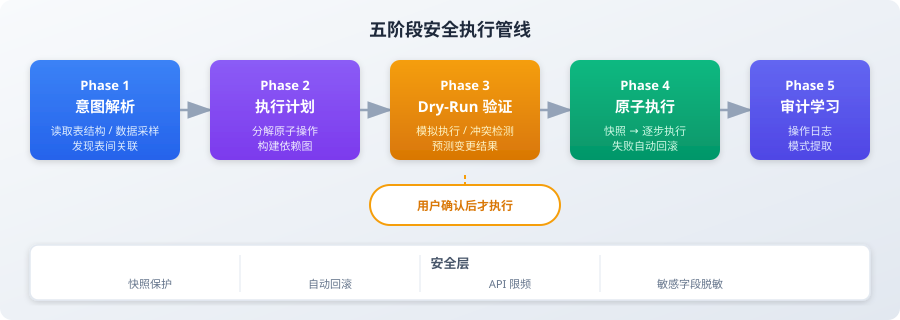

一对一，一条线，一根筋。但你真正想做的是这样的：
一句话里有五件事：跨表查询、条件判断、数据修改、消息通知、定时任务。 飞书原生自动化一个都做不了。
bitable-orchestrator 让你用自然语言驱动这一切——跨表关联、条件分支、批量处理、事务回滚，一句话搞定。

多维表数据是企业核心资产——直接改、错了就没了。 所以 bitable-orchestrator 不是"一句话就执行"，而是分成 5 个阶段， 每一阶段都给你看清楚 + 拍板的机会。
自然语言 → 结构化的"想做什么"（不是执行计划，是意图描述）。
查询路径、依赖图、原子操作序列。拓扑排序保证执行顺序正确。
在不改数据的情况下，把每一行将要发生什么列出来给你看。
事务式执行——中途任何一步失败，全部回滚到执行前状态。
完整记录所有变更 + 失败原因，下次相似操作能复用经验。

① Dry-Run 预演必须显式——每一次破坏性操作前，强制展示"会动什么"。 不能让用户"以为只是查询，结果改了数据"。
② 原子回滚不是可选项——任何中途失败必须能回到操作前的状态。 飞书 OpenAPI 没原生事务，那就在 Skill 层模拟一个： 每次操作前记录原值，失败时按反向顺序还原。
③ 依赖图拓扑排序保证顺序—— "查库存→扣库存→通知采购"是有先后的，不能并行。 用有向无环图（DAG）建模操作依赖，拓扑排序后串行执行。
飞书 CLI 创作者大赛"十佳"评审更倾向普通飞书用户立刻能用上的轻量 Skill—— knowledge-healer 解决普遍的"知识库自愈"、lark-survey-scoreboard 解决任何培训都能用的"实时评分"。
bitable-orchestrator 定位偏 ToB enterprise—— 面向中大企业的"复杂业务流编排"，不是个人用户随手能玩的东西。 它的目标用户不是评审能立刻代入的"自己的工作场景"。
但项目质量本身没问题。 5 阶段安全管线、原子回滚、依赖图——这是我至今做过"系统设计最完整"的一个 Skill。 不为没入选难过——评审做了合理的选择，定位错位不是质量问题。
我同期投了 3 个 Skill，2 个入选 1 个没入。这种结果在 ToC 评审里很常见—— 评审挑的是"用户面最宽"，不是"工程最复杂"。
但对我个人来说，bitable-orchestrator 给我的东西比另两个更多—— 它是我第一次设计多阶段安全管线、第一次显式建模事务回滚、 第一次用拓扑排序做依赖管理。这些都是工程系统设计的基本功， 在 ToC 工具里基本用不到，在 ToB 系统里又是必须的。
所以这个项目放在这里——未入选，但完整。 它证明我能做"评审看不到但工程必要"的事， 这种能力比一次入选更重要。